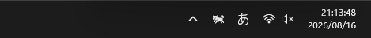
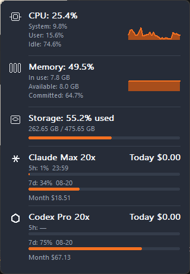

RunDog
通知領域で犬を飼ってみませんか？
犬の走る速さで Windows の CPU 負荷がわかります。タスクバーをちらっと見るだけで十分です。

Windows 向けにダウンロード GitHub Releases
Windows 10 / 11（64-bit） · GitHub で見る
特長
ホバーカード

犬にポインターを重ねるとカードが開きます。数字を探しに行く必要はありません。
Claude Code と Codex
サブスクリプションの 5 時間・7 日上限と、API 相当の利用料をカードへ出します。claude や codex を起動せず、必要なログだけを読みます。